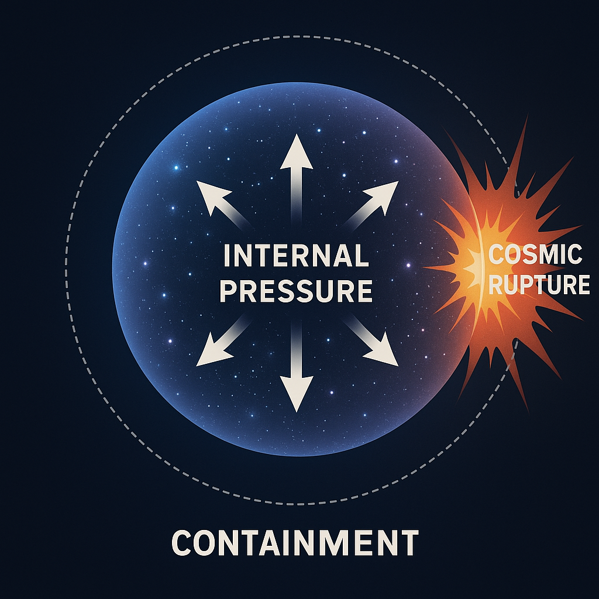
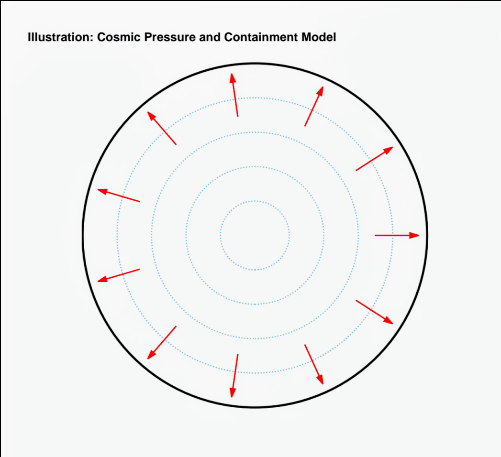
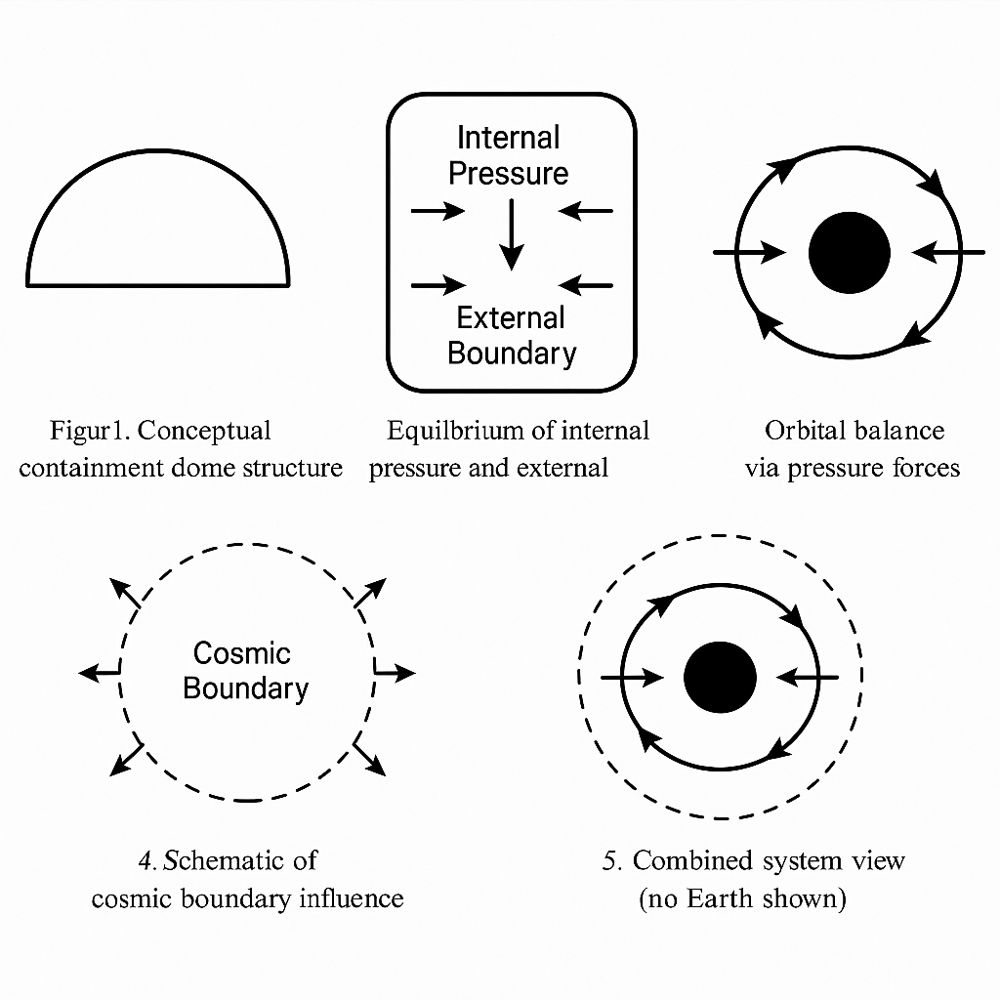
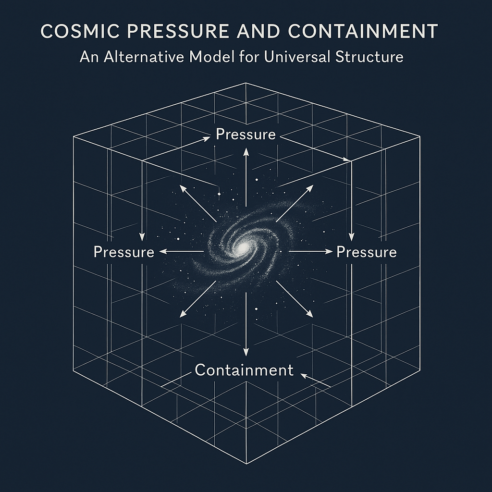
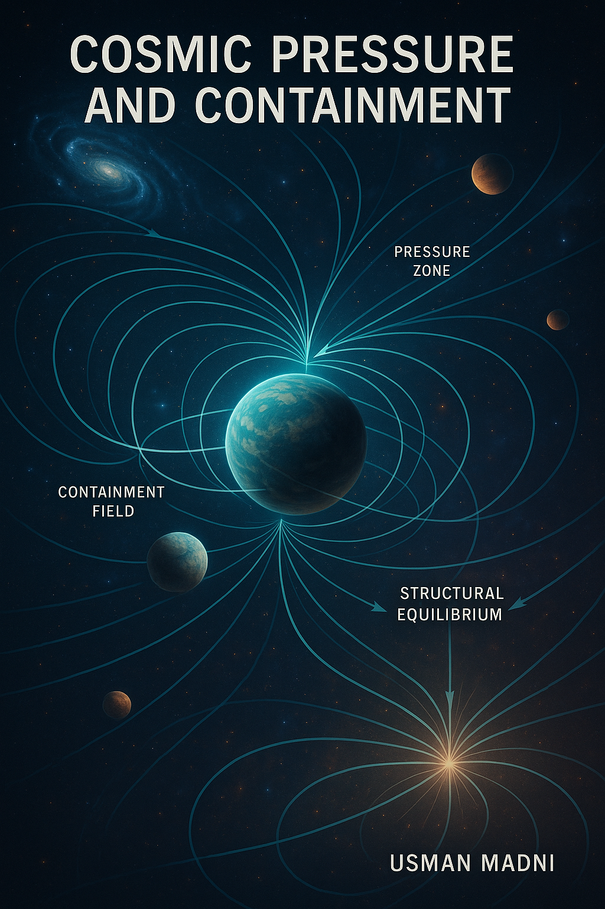

خلاصہ
یہ مقالہ 'کائناتی دباؤ اور گھیراؤ' (CPC) نظریے کو پیش کرتا ہے جو اس تصور پر مبنی ہے کہ کائنات اپنی ساخت کو اندرونی دباؤ اور بیرونی گھیراؤ کی قوت کے توازن سے قائم رکھتی ہے۔ یہ نظریہ کشش ثقل کے واحد ماڈل کو چیلنج کرتے ہوئے کائناتی توسیع، کہکشاؤں کی حرکات، اور روشنی کے رویے کو دباؤ کی بنیاد پر سمجھاتا ہے۔
١. تعارف
جدید کاسمولوجی میں کائناتی ساخت اور حرکات کو عمومی طور پر کششِ ثقل کے اصولوں سے تعبیر کیا جاتا ہے۔ تاہم، مشاہداتی حقائق جیسے کہ تیز ہوتی ہوئی توسیع، کہکشاؤں کے گردش کے نمونے، اور وسیع کائناتی ڈھانچوں کی استحکام متبادل نظریات کی ضرورت کو ظاہر کرتے ہیں۔ CPC تھیوری یہ تجویز کرتی ہے کہ کائناتی دباؤ جو بیرونی گھیراؤ کے توازن میں ہو، کائنات کے استحکام کو کنٹرول کرتا ہے اور نئے نظریاتی زاویے پیش کرتا ہے۔
٢. CPC نظریہ کے حق میں دس سائنسی دلائل
- کائنات کا مسلسل پھیلاؤ: کہکشائیں دور جا رہی ہیں، جو اندرونی دباؤ کی نشاندہی کرتا ہے۔
- کائناتی توازن: اگر صرف گریویٹی کام کرتی، تو کائنات منہدم ہو جاتی، لیکن ہم توازن دیکھتے ہیں۔
- بلیک ہولز اور نیوٹرون اسٹارز کا محدود دائرہ: بتاتا ہے کہ احتواء قوتیں انہیں محدود رکھتی ہیں۔
- CMBR کی یکنواختی: یونیفارم سگنلز دباؤ کے توازن کی گواہی دیتے ہیں۔
- مادہ و اینٹی مادہ کا فرق: دباؤ کی مداخلت کی علامت ہو سکتی ہے۔
- کوانٹم ویکیوم پریشر: Casimir Effect دباؤ کی موجودگی کو خلا میں بھی ظاہر کرتا ہے۔
- گریویٹی کی کوانٹم سطح پر ناکامی: دباؤ پر مبنی متبادل کا تقاضا کرتی ہے۔
- کائناتی حدود: بیرونی گھیراؤ کے بغیر توازن ممکن نہیں۔
- تشبیہ معمارانہ: بلبلے یا گنبد جیسی کائنات جو اندرونی دباؤ سے متوازن ہے۔
- قدرتی نظام جیسے دماغی دباؤ: قدرتی دنیا میں دباؤ کے نظامات عمومی توازن پیدا کرتے ہیں۔
٣. کائناتی پھٹاؤ — ایک نظریاتی انجام
اگر اندرونی دباؤ حد سے بڑھ جائے اور بیرونی گھیراؤ اسے سنبھال نہ سکے، تو کائنات پھٹ سکتی ہے، جس سے تمام کہکشائیں اور مادہ تباہ ہو جائے گا۔
٤. پہلا اثر — سمندروں کا ردعمل
پانی غیر سکڑنے والا ہے، اس لیے زمین کے سمندر سب سے پہلے اس دھماکے کا اثر محسوس کریں گے، اور اس کی شدت ناقابلِ برداشت ہوگی۔
٥. اجسام کا خلا میں معلق ہونا — دباؤ کی بنیاد پر
CPC کے مطابق، خلا میں اجسام صرف گریویٹی کی وجہ سے نہیں بلکہ دباؤ کے توازن سے معلق رہتے ہیں۔
٦. روشنی پر دباؤ کا اثر
روشنی کی رفتار اور سمت دباؤ کے تابع ہو سکتی ہے۔ یہ ریڈ شفٹ اور لینزنگ جیسے مظاہر کی نئی وضاحت پیش کرتا ہے۔
٧. نظریاتی مساوات
توازن: Pi × A = Fc × A ⇒ Pi = Fc
مداری دباؤ: Pr(r) = P₀ / (1 + k r²)
ریڈ شفٹ: Δλ ∝ ∇P · d
٨. مرکزی نظریات کی خامیاں
- جنرل ریلیٹیویٹی: ڈارک انرجی کے بغیر توسیع کی وضاحت نہیں کر سکتی۔
- نیوٹونی گریویٹی: دباؤ کو نظر انداز کرتی ہے۔
- ڈارک انرجی ماڈلز: غیر مرئی قیاسات پر مبنی ہیں۔
- سٹرنگ تھیوری: پیچیدہ اور غیر مشاہدہ شدہ۔
٩. CPC نظریہ کی خوبیاں
- ڈارک انرجی کے بغیر توسیع کی وضاحت دیتا ہے۔
- سنگولیریٹی سے پاک ہے۔
- حقیقی دنیا کی مثالوں سے تشبیہ دیتا ہے۔
١٠. نتیجہ
CPC نظریہ کائنات کی ساخت اور حرکت کی وضاحت کے لیے ایک دباؤ پر مبنی ماڈل پیش کرتا ہے، جو صرف کششِ ثقل پر مبنی ماڈلز کی کمزوریوں سے پاک ہے۔
١١. حوالہ جات
- Misner, Thorne & Wheeler (1973). Gravitation.
- Padmanabhan (1993). Structure Formation in the Universe.
- Peebles (1993). Principles of Physical Cosmology.
- Riess et al. (1998). The Astronomical Journal.
- Verlinde (2017). Emergent Gravity.
- Zee (2010). Quantum Field Theory in a Nutshell.
- Weinberg (1972). Gravitation and Cosmology.
١٢. تصویریں





© 2025 عثمان مدنی — جملہ حقوق محفوظ ہیں